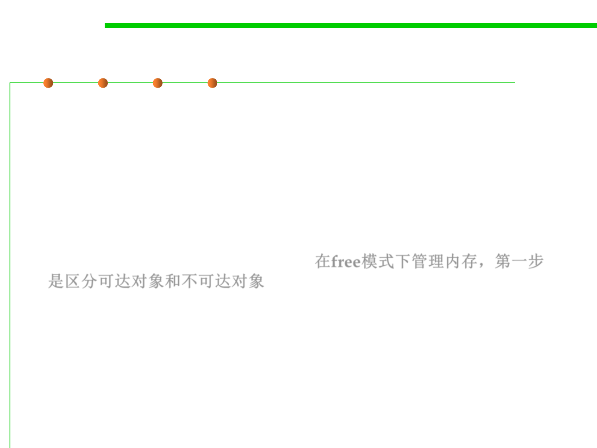

8.1 Metrics, Principles, and Methods of Construction for Performance
The roots of a computation
▪ Any dependent, direct or indirect, of these origins/roots is
reachable, and any other object is unreachable:
– For an unreachable object, it is possible to reclaim the memory it occupies
(for example to recycle it for other objects) without affecting the correct
semantics of the system’s execution
▪ The first step towards addressing the problem of memory
management under the free mode is to separate the reachable
objects from the unreachable ones. 在free模式下管理内存，第一步
是区分可达对象和不可达对象